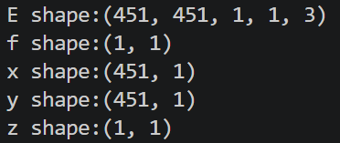
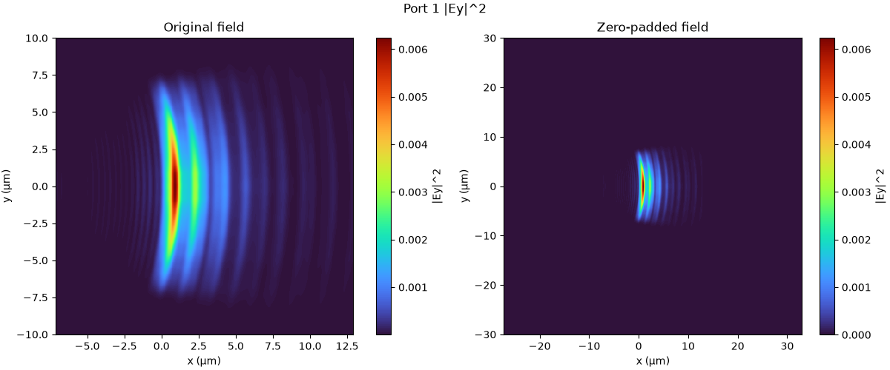
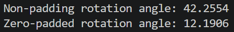
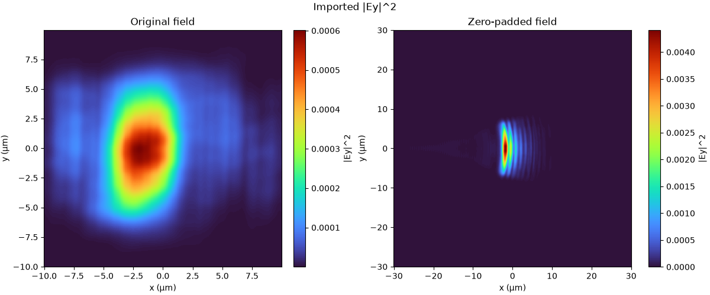
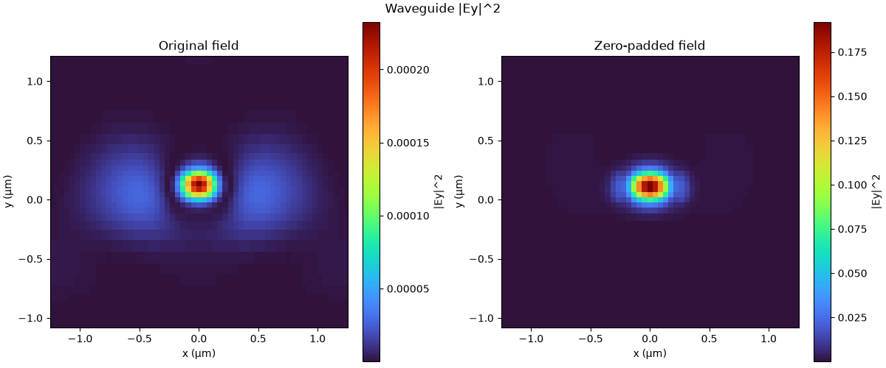

Grating Coupler: ZBF2 Exportation#
Given a grating coupler design, this example demonstrates how to export its port data to Zemax ZBF2 format. This example will duplicate this example in a much simpler way: zbf2write and zbf2read commands.
This example is the forth part of the grating-coupler workflow:
Create a grating coupler: set up the base simulation and run it.
Optimize the grating coupler: improve the fiber position for better coupling efficiency.
Extract S-parameters: export S-parameters to INTERCONNECT.
Lumerical FDTD and Zemax connection: export monitor to ZBF2 and import ZBF2 as source.
In this example, we will show:
How to export the port data to Zemax ZBF2 format
How to import a ZBF2 file as source
We will only focus on exporting and importing the port data in Lumerical FDTD. The importing and exporting in Zemax will not be covered in this example.
Prerequisites
A valid Lumerical FDTD license is required.
Import required modules and assign key parameters#
The grating coupler setup file can be obtained from following Grating Coupler example(TODO: link)
[ ]:
1from pathlib import Path
2from typing import OrderedDict
3
4import matplotlib.pyplot as plt
5import numpy as np
6
7import ansys.lumerical.core as lumapi
[ ]:
8show_GUI = True
9use_GPU_solver = True
10
11# Path to load existing grating coupler setup file
12fdtd_file_path = "your/path/to/grating_coupler_setup.fsp"
13# Path to save the exported ZBF2 file
14zbf2_write_path = "your/path/to/port1.zbf2"
15
16# Unit conversion factors
17um_to_m = 1e-6
18m_to_um = 1e6
19
20# Wavelength for single-frequency simulation
21wavelength = 1.55 * um_to_m
22
23# Speed of light defined in Lumerical
24c = 299792458
Load FDTD simulation#
The grating coupler example setup has its port 1 as fiber port and port 2 as waveguide port. In this example, we will delete the fiber, put the port 1 inside the up cladding, and assign port 2 as the input port.
We also need to set the global source to a single wavelength, as zbf2write only supports single frequency data.
[ ]:
25fdtd = lumapi.FDTD(hide=not show_GUI)
26fdtd.load(fdtd_file_path)
27fdtd.switchtolayout()
28
29# Change global source to single wavelength
30fdtd.setglobalsource("wavelength start", wavelength)
31fdtd.setglobalsource("wavelength stop", wavelength)
32
33# Change mesh accuracy from 1 to 2
34fdtd.setnamed("FDTD", "mesh accuracy", 2)
35
36# Select and delete the fiber structure group.
37try:
38 fdtd.unselectall()
39 fdtd.select("fiber")
40 fdtd.delete() # Delete the fiber
41except Exception:
42 print("Fiber not found, skipping deletion.")
43
44# Move the port 1 inside the up cladding, and flat
45SiO2_TOX_z = fdtd.getnamed("SiO2 TOX", "z max")
46port_1_properties = OrderedDict(
47 {
48 "z": SiO2_TOX_z - 0.1 * um_to_m,
49 "theta": 0.0,
50 "phi": 0.0,
51 "rotation offset": 0.0,
52 }
53)
54for key, value in port_1_properties.items():
55 fdtd.setnamed("FDTD::ports::port 1", key, value)
56
57# Change input port to specified port
58fdtd.setnamed("FDTD::ports", "source port", "port 2")
59
60# Save and run simulation
61fdtd.save(str(Path(fdtd_file_path).with_name("grating_coupler_setup_zbf2.fsp")))
62if use_GPU_solver:
63 fdtd.run("FDTD", "GPU")
64else:
65 fdtd.run("FDTD", "CPU")
66fdtd.save(str(Path(fdtd_file_path).with_name("grating_coupler_setup_zbf2.fsp")))
Extract result from port 1 and do zero-padding#
Zero-padding is recommended to keep more accurate spatial resolution when performing the zbf2 export. In this example we will export zbf2 data from both original field and two-times zero-padded field.
[ ]:
67def zero_padding_e(e: dict, times: int = 2) -> dict:
68 """Zero-pad the E field by `times`, keeping the original field centered."""
69 E_padded = e.copy()
70 pad_width = []
71 for key in ("x", "y"):
72 coord = np.asarray(e[key])
73 values = coord.reshape(-1)
74 before = len(values) * times // 2
75 after = len(values) * times - before
76 padded_coord = np.concatenate(
77 (
78 values[0] - (values[3] - values[2]) * np.arange(before, 0, -1), # use [3]-[2] instead of [1]-[0] to avoid smaller spacing at edge
79 values,
80 values[-1] + (values[-3] - values[-4]) * np.arange(1, after + 1), # same
81 )
82 )
83 E_padded[key] = padded_coord.reshape((-1,) + coord.shape[1:])
84 pad_width.append((before, after))
85 E_padded["E"] = np.pad(e["E"], pad_width + [(0, 0)] * 3)
86 return E_padded
[ ]:
87port_name = "::model::FDTD::ports::port 1"
88E_orig = fdtd.getresult(port_name, "E")
89E_padded = zero_padding_e(e=E_orig, times=2)
90zbf2_padded_write_path = zbf2_write_path.replace(".zbf2", "_2.zbf2")
91
92# Print the shapes of the original E field components for verification.
93print(
94 f"E shape:{np.shape(E_orig['E'])}\n"
95 f"f shape:{np.shape(E_orig['f'])}\n"
96 f"x shape:{np.shape(E_orig['x'])}\n"
97 f"y shape:{np.shape(E_orig['y'])}\n"
98 f"z shape:{np.shape(E_orig['z'])}"
99)
100
101
102# Plot both fields
103def plot_beams_ey2(
104 orig_x: np.ndarray,
105 orig_y: np.ndarray,
106 orig_e: np.ndarray,
107 padded_x: np.ndarray,
108 padded_y: np.ndarray,
109 padded_e: np.ndarray,
110 title: str,
111 x_label: str = "x (µm)",
112 y_label: str = "y (µm)",
113):
114 """Plot the Ey intensity of the original and zero-padded E fields."""
115 fig, axes = plt.subplots(1, 2, figsize=(12, 5), constrained_layout=True)
116 for ax, x, y, field, sub_title in (
117 (axes[0], orig_x, orig_y, orig_e, "Original field"),
118 (axes[1], padded_x, padded_y, padded_e, "Zero-padded field"),
119 ):
120 mesh = ax.pcolormesh(
121 x.flatten() / um_to_m,
122 y.flatten() / um_to_m,
123 np.abs(field.squeeze()[:, :, 1]).T ** 2, # Ey intensity
124 shading="nearest",
125 cmap="turbo",
126 )
127 fig.colorbar(mesh, ax=ax, label="|Ey|^2")
128 ax.set_xlabel(x_label)
129 ax.set_ylabel(y_label)
130 ax.set_aspect("equal")
131 ax.set_title(sub_title)
132
133 fig.suptitle(title)
134 plt.show(block=False)
135
136
137plot_beams_ey2(E_orig["x"], E_orig["y"], E_orig["E"], E_padded["x"], E_padded["y"], E_padded["E"], title="Port 1 |Ey|^2")
Port E field shape format: (x, y, z, f, 3), where the last dimensions correspond to Ex, Ey, Ez.


Export ZBF2 file#
Use zbf2write command to export the field data as .zbf2 file. Please refer to here for more details.
rotation_matrix will be included in the ZBF2 file metadata, representing the rotation of the beam. Because of the zero-padding, two ZBF2 files’ beam propagation angle will be different. The larger the padding, the smaller the rotation angle deviation.
[ ]:
138def get_index(fdtd, name: str) -> float:
139 """Get the refractive index of the specified component."""
140 material = fdtd.getnamed(name, "material")
141 if material == "<Object defined dielectric>":
142 # Component defined with index
143 index = fdtd.getnamed(name, "index")
144 else:
145 # Component defined with material
146 f = c / wavelength # frequency corresponding to the wavelength
147 index = np.real(np.asarray(fdtd.getindex(material, f)).squeeze())
148 return float(index)
149
150
151port_position = np.array([fdtd.getnamed("FDTD::ports::port 1", axis) for axis in ("x", "y", "z")])
152
153orig_zbf2 = {
154 "beam": E_orig,
155 "index": get_index(fdtd, "SiO2 TOX"),
156 "position": port_position,
157}
158fdtd.zbf2write(zbf2_write_path, orig_zbf2)
159
160zeropadded_zbf2 = {
161 "beam": E_padded,
162 "index": get_index(fdtd, "SiO2 TOX"),
163 "position": port_position,
164}
165fdtd.zbf2write(zbf2_padded_write_path, zeropadded_zbf2)
[ ]:
166# Check the rotation angles of the two ZBF2 files
167temp = fdtd.zbf2read(zbf2_write_path, 1, False)
168rotation_angle = np.rad2deg(np.acos(temp["rotation_matrix"][0][0]))
169print(f"Non-padding rotation angle: {rotation_angle:.4f}")
170
171temp = fdtd.zbf2read(zbf2_padded_write_path, 1, False)
172rotation_angle = np.rad2deg(np.acos(temp["rotation_matrix"][0][0]))
173print(f"Zero-padded rotation angle: {rotation_angle:.4f}")

Import ZBF2 file#
In practice, the ZBF2 file to import comes from Zemax OpticStudio. Here we re-import the file exported in Part 1 as a stand-in. Please refer to here for more details.
Ports and mode sources cannot take imported fields directly. Therefore, we
stop the ports from injecting; port 2 still records data, so it measures the coupling into the waveguide,
add an imported source at the ZBF2 position (port 1, whose index matches the ZBF2 index),
inject the beam downward toward the grating.
[ ]:
174def import_zbf2_and_set(fdtd, zbf2_file_path: str, source_name: str, save_file_path: str) -> np.ndarray:
175 """Import a ZBF2 file and set the corresponding imported source in FDTD."""
176 # Import the raw ZBF2 data with the rotation matrix applied
177 zbf2_raw = fdtd.zbf2read(zbf2_file_path, 1, True)
178 beam = zbf2_raw["beam"]
179 position = zbf2_raw["position"]
180
181 # Assign the imported beam to the source
182 fdtd.select(source_name)
183 fdtd.importdataset(beam) # applies to the selected object
184
185 fdtd.setnamed(source_name, "direction", "Backward") # down toward the grating
186 for axis, value in zip(("x", "y", "z"), np.asarray(position).ravel()):
187 fdtd.setnamed(source_name, axis, value)
188
189 # Save and run
190 fdtd.save(save_file_path)
191 fdtd.run()
192 fdtd.save(save_file_path)
193
194 # Collect the waveguide E field from port 2
195 waveguide_E = fdtd.getresult("FDTD::ports::port 2", "E")
196
197 return beam, waveguide_E
[ ]:
198fdtd.switchtolayout()
199fdtd.setnamed("FDTD::ports", "source port", "") # ports only record data now
200fdtd.addimportedsource(name="zbf2_source")
201
202# Set up each imported source and run simulations, this may take some time.
203file_path = str(Path(fdtd_file_path).with_name("grating_coupler_orig_zbf2.fsp"))
204orig_beam, orig_waveguide_beam = import_zbf2_and_set(fdtd=fdtd, zbf2_file_path=zbf2_write_path, source_name="zbf2_source", save_file_path=file_path)
205
206fdtd.switchtolayout()
207file_path = str(Path(fdtd_file_path).with_name("grating_coupler_padded_zbf2.fsp"))
208padded_beam, padded_waveguide_beam = import_zbf2_and_set(
209 fdtd=fdtd, zbf2_file_path=zbf2_padded_write_path, source_name="zbf2_source", save_file_path=file_path
210)
[ ]:
211plot_beams_ey2(orig_beam["x"], orig_beam["y"], orig_beam["E"], padded_beam["x"], padded_beam["y"], padded_beam["E"], title="Imported |Ey|^2")
212
213plot_beams_ey2(
214 orig_waveguide_beam["y"],
215 orig_waveguide_beam["z"],
216 orig_waveguide_beam["E"],
217 padded_waveguide_beam["y"],
218 padded_waveguide_beam["z"],
219 padded_waveguide_beam["E"],
220 title="Waveguide |Ey|^2",
221 x_label="y (µm)",
222 y_label="z (µm)",
223)


Please note that the two monitors images (port 1’s before export and waveguide’s after import & simulation) are in global coordinate systems, yet the importsource’s local coordinate system is used for the imported beam, making its x- and y-axes symmetric about zero.
[ ]:
224# Close the simulation properly.
225if not show_GUI:
226 fdtd.close()